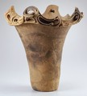

|  | Japan, Middle Jomon period Storage Jar About 3000-2000 B.C. Earthenware with modeled and impressed decor 22 inches wide, 21-1/4 inches high The Ethel Morrison Van Derlip Fund 82.9.1 |
Look
- Describe the vessel you see. What material is this jar made of? How
can you tell? Where does clay come from? What does clay feel like when
you begin to work with it? Is it hard or easy to form into a shape?
Why? What happens when clay is fired? Why does it have to be fired?
- What shapes do you see? Are the shapes mostly GEOMETRIC
or mostly ORGANIC?
What about the shape of the jar itself?
- Do you think this jar was made (a) on a potter's wheel, (b) using
the coil method, (c) with a mold, or (d) by the slab method? Explain
your answer. How do you think the artist made the rim? What tools do you
think the artist used to make the design on the body of the jar?
- Is this jar SYMMETRICAL
or ASYMMETRICAL?
Explain your answer.
- What do you think this jar would feel like if you could touch it?
Would it be rough or smooth? What makes you say that? Do you think this
jar would be heavy? Why do you say that?
Think
- What do you think this pot was used for? Do you think the artist who
created the pot was more interested in its use or its decoration? Why
do you say that?
- What sort of containers do you and your family keep your food in?
What are your containers made of? What would you keep in this jar? If
you were going to make a special container for yourself, how would you
make and decorate it? What materials would you use?
- Compare this jar to the Hopi-Tewa seed jar. In what ways does each
work reflect the environment of the people who made it? What do the
materials and decorations tell you about the culture from which the
work came?
- Does the appearance of this jar suggest that it was a special jar
to the Jomon people? Many Jomon pots had a unique design. Why would
the Jomon people want each pot to look unique?

Key ideas.
Where does it come from?
What does it look like?
How was it used?
How was it made?
Discussion questions.
Additional resources.
Select another piece.